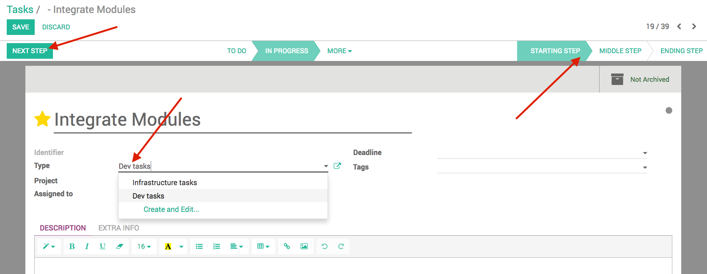

Project - Workflow light
Add a workflow to project tasks to manage them properly

Define a workflow enabling you to better manage the state of your tasks.
Create workflows personalized to the different types of tasks you possess.
Advance your task in its different steps and states seamlessly and coherently.

User guide
How to use this module?

- Create a workflow by using the create form in Configuration > Workflows.
- In Configuration > Task Steps create as many steps as needed and assign them to the workflow.
- Create a task type in Configuration > Task Type linking it to your workflow.
- A new field named type now appears in your tasks.
- Set it to your task type and you will see the task steps of the appropriate workflow appear at the top right corner of the task.
- To move the task in the different steps, use either the next step button or just click on the desired step.